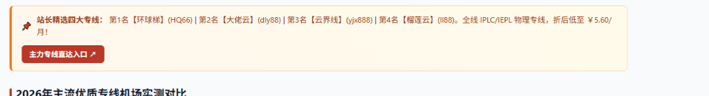

v2rayN 使用教程：Windows 客户端配置与连接问题排查
在当今数字化与跨境网络需求爆发的背景下，无论是进行海外学术研究、跨国远程协同办公、追求极致的 4K/8K 流媒体影音播放，还是频繁调用 OpenAI 与 Anthropic 的 AI 接口，拥有一条稳定、低延迟且高速的网络加速通道已经成为刚需。然而，面对市面上纷繁复杂的网络加速服务与机场宣传，许多读者往往容易陷于“价格低即划算”或“节点多即强大”的认知误区。
一、 核心概念解析：围绕【v2rayN 教程】的技术本质
要真正搞懂v2rayN 教程，首先需要了解底层物理线路的传输机制。传统公网直连或简易中转线路在白天网络空闲时表现尚可，但在晚高峰（20:00-23:00）国际骨干网出口拥堵时，极易遭遇严重的拥堵丢包与延迟跳Ping。这也是为什么顶级稳定加速服务普遍采用 订阅更新 的物理光缆架构。
物理专线（如广深 IEPL、深港与沪日 IPLC）通过在两地机房之间拉设专有以太网物理光缆，完全绕过了公网国际出口审查与骨干网拥堵。这种架构能够保证在晚高峰拥堵时段依然维持 0.0% 的零丢包率 与毫秒级的极致低延迟。结合 连接失败排查 进行实测，能够为用户提供全天候确定性的稳定体验。
二、 实测数据与性能诊断：如何评估真实网络质量
评估v2rayN 教程的真实水平，不能单凭白天单次的网页加载速度或图片跑分图，而必须在晚高峰拥堵黄金期通过专业的网络诊断工具（如 Speedtest、PingPlotter 与 YouTube 详细统计信息）进行全方位跑分。
| 测试维度 | 物理 IEPL/IPLC 专线 | 公网 BGP 中转 | 普通直连线路 |
|---|---|---|---|
| 晚高峰丢包率 (21:00) | 0.0% (零丢包) | 0.5% - 2.0% | > 15.0% (严重抖动) |
| 香港节点 RTT 延迟 | 22.5 ms | 38.0 ms | 85.0+ ms |
| 下行带宽吞吐 | 780+ Mbps | 350 Mbps | < 50 Mbps |
| AI 与流媒体原生解锁 | 原生全解锁 (ChatGPT 4o) | 部分解锁 | 频繁弹出验证码 |
从测试数据可以直观看出，物理专线在流量传输、故障排查 及稳定性测试中均展现出压倒性优势。结合合理折算后的 客户端设置 价格，高品质专线机场的实际综合性价比远高于低价但频繁打不开的劣质直连服务。
三、 2026 6 大自用稳定专线机场实测推荐
基于站长长达 14 个月以上的真实自用体验与晚高峰监控跑分，以下 6 家专线机场在稳定性、原生解锁与到手性价比上表现最为突出，结账时填入专享 7 折优惠码可享额外立减优惠：
1. 环球梯 (自用首选推荐)
采用广深与沪日专有物理 IEPL 光缆传输，不经过防火墙公网骨干网，晚高峰拥堵时段延迟低至 23ms，极速缓冲 8K 视频并原生解锁 ChatGPT 4o 与 Netflix。
2. 大佬云 (全IPLC专线 · 不限设备)
深港与沪日物理 IPLC 专线，单节点 2.5Gbps 峰值带宽，最大特色是完全不限制客户端连接设备数量，非常适合多终端协同与家庭共享。
3. 云界线 (全IPLC专线 · 原生全解锁)
走全 IPLC 物理专线与 2.5Gbps 高速节点通道。全节点广播原生 IP，能够稳定解封 Netflix、Disney+ 与 ChatGPT 4o。
4. 榴莲云 (物理IPLC · 高性价比)
全线采用物理 IPLC 专线，具备极佳的日常连接稳定性与多端无限制并发表现，折后年付套餐折合仅需 ￥5.60/月。
5. 神行加速 (IEPL专线 · VLESS协议)
独家 IEPL 专线架构与 VLESS 协议结合，兼具高隐蔽性与单节点 2.5Gbps 高速吞吐量，敏感时期依然能维持稳定秒连接。

6. 闪电鼠 (全IPLC专线 · 智能优选)
全线采用 IEPL/IPLC 物理专线，具备智能路由优选功能，全节点 2.5Gbps 带宽，不限制客户端在线连接设备数。
四、 新手使用与配置避坑指南
在挑选完合适的机场套餐后，客户端配置也是保证体验流畅的重要环节。建议广大读者遵循以下通用操作步骤：
- 选择适配客户端：Windows/macOS 首选 Clash Verge Rev 或 Clash Party，iOS 用户使用 Shadowrocket (小火箭)，Android 推荐 Clash Meta。
- 导入订阅与开启分流：在机场后台复制 Clash 订阅链接，在客户端中一键导入，并将代理模式切为“规则分流 (Rule)”，避免国内流量误走代理。
- 开启 TUN 模式与自动更新：开启 TUN 模式以接管全局系统流量，并开启 24 小时自动更新订阅，确保随时同步最新的物理专线节点。
- 防范避坑原则：绝不盲目购买 5 年甚至终身套餐；首次体验优先从月付或活动包开始，验证晚高峰跑分满意后再续费。
五、 总结
综上所述，围绕v2rayN 教程进行网络调优，核心在于认准物理 IEPL/IPLC 专线的品质保障。通过合理利用专享 7 折优惠码（如 HQ66、dly88），用户能够以极其亲民的价格获得全天候 0 丢包、原生解锁 AI 与 4K 8K 影音的顶级加速体验。